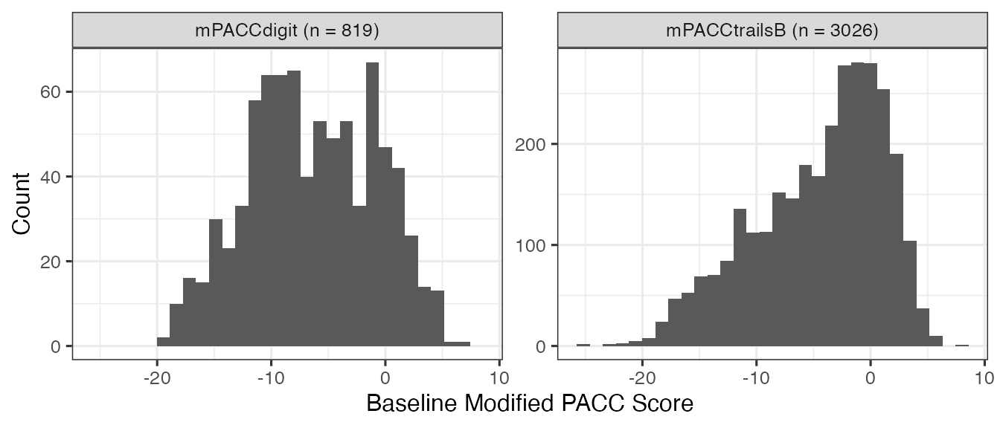

ADNIMERGE2-PACC-SCORE
Last Updated: November 12, 2025
Source:vignettes/ADNIMERGE2-PACC.Rmd
ADNIMERGE2-PACC.RmdIntroduction
This article describes the procedure to calculate a modified version of the Preclinical Alzheimer Cognitive Composite PACC score in ADNI study based on Donohue et al. (2014) approach.
According to Donohue et al. (2014), the
PACC score is a baseline standardize composite of:
Free and Cued Selective Reminding Test (FCSRT) score
Logical Memory IIa Delayed Recall (LM) score
Digit Symbol Substitution Test (DSST) score, and
Mini-Mental State Examination (MMSE) total score
Each of component score is required to be standardized by a corresponding baseline score prior to computing the composite score. Higher values of the composite score indicate better performance.
In ADNI study, some of these components are either collected
partially during certain study phase or not available at all. Since
FSCRT is not available at all, the Delayed Recall portion of the
Alzheimer’s Disease Assessment Scale (ADAS), which is called
ADAS-Cog Q4 score, will be used as a proxy. The ADAS-Cog Q4
score ranges from 0 to 10 points where higher value
indicates worse condition. Similarly, a logarithm scale of
Trails B score will be used as a proxy for DSST. Therefore,
there will have two modified version of PACC composite
score:
mPACCdigit: It will only be computed in
ADNI1study phase since DSST was collected in the early phase of ADNI study.mPACCtrailsB: It will be computed across all ADNI study phases using
Trails Bscore as a proxy for DSST.
Load Required R Packages
# ADNI study R data package
library(ADNIMERGE2)Compute PACC Composite Score
Import Raw Datasets
First, we import pre-processed raw datasets that contain PACC
component from the ADNIMERGE2 package. These raw datasets
were stored in csv format as external data in the package.
The main rational of sourcing those as external data is 1) not all PACC
component score are yet available at the data-sharing platform,
particularly the ADAS-Cog Q4 score, and 2) to reduce any potential
additional package dependency during the ADNIMERGE2 package
building.
In the next r chunk, all raw datasets will be loaded to the current
working environment using load_csv_files() function.
# Import PACC input raw datasets
pacc_raw_data_dir <- system.file(
"extradata/pacc-raw-input",
package = "ADNIMERGE2",
mustWork = TRUE
)
load_csv_files(input_dir = pacc_raw_data_dir)These raw datasets are in a long format and presented as follow:
pacc_mmse_long: A dataset contains theMMSEscore downloaded from the data-sharing platform.pacc_neurobat: A dataset contains Logical Memory - Delayed Recall (LDELTOTL), Digit Symbol Substitution (DIGITSCR), and Trials B (TRABSCOR) raw scores from Neuropsychological Battery (NEUROBAT) data. TheNEUROBAT()data is also downloaded from the data-sharing platform.-
pacc_adas_q4score_long: A dataset contains the rawADAS-Cog Q4score that obtained from two sources:Current study phase EDC portal
Old version of ADNI study R data package
ADNIMERGEfrom the data-sharing platform that contain records from ADNI1 to ADNI3 study phases.
Data Preparation Assumption
During the raw dataset preparation, the screening fail visit code in
ADNI1study phase was mapped to the actual screening visit code.Since some of the PACC component assessments were either not collected at baseline visit during the whole study or partially collected at baseline visit in certain study phase. It is reasonable to carrying forward the screening visit record of an assessment as a corresponding baseline record if the baseline assessment result is missing/unknown. For instance,
MMSEwas not collected at any baseline visit, and the other neuropsychological assessments (i.e.,LDELTOTL,DIGITSCR, andTRABSCOR) are partially collected at baseline visit in certain study phase.
The following r chuck demonstrate how the screening-baseline visit
adjustment is preformed by carrying forward any screening visit record
as a baseline record using adjust_scbl_record()
function.
# Adjustment of screening-baseline record
id_vars <- c("COLPROT", "RID", "VISCODE", "SCORE_SOURCE")
## MMSE ----
pacc_mmse_long <- pacc_mmse_long %>%
bind_rows(
adjust_scbl_record(
.data = pacc_mmse_long,
adjust_date_col = "VISDATE",
check_col = "SCORE"
) %>%
filter(VISCODE %in% get_baseline_vistcode())
) %>%
assert_uniq(all_of(id_vars)) %>%
set_as_tibble()
## NEUROBAT ----
neurobat_vars <- c("LDELTOTL", "DIGITSCR", "TRABSCOR")
adjusted_bl_neurobat <- adjust_scbl_record(
.data = pacc_neurobat_long,
wide_format = FALSE,
extra_id_cols = "SCORE_SOURCE",
adjust_date_col = "VISDATE",
check_col = "SCORE"
) %>%
# Only baseline records
filter(VISCODE %in% get_baseline_vistcode())
pacc_neurobat_long <- pacc_neurobat_long %>%
filter(!VISCODE %in% get_baseline_vistcode()) %>%
bind_rows(adjusted_bl_neurobat) %>%
distinct() %>%
assert_uniq(all_of(id_vars)) %>%
set_as_tibble()
# ADAS-cog Q4 Score ----
pacc_adas_q4score_long <- pacc_adas_q4score_long %>%
set_as_tibble()The next step is to combine all the raw datasets and converting the combined data into a wide format using the study data collection phase/protocol and study visit code per subject.
# Bind PACC input raw-data
pacc_input_data_long <- bind_rows(
pacc_mmse_long,
pacc_neurobat_long,
pacc_adas_q4score_long
)
# Convert into wide format
pacc_component <- c("ADASQ4SCORE", "MMSE", neurobat_vars)
pacc_input_data_wide <- pacc_input_data_long %>%
unite(col = "SCORE_VISDATE", SCORE, VISDATE, sep = "-/") %>%
pivot_wider(
names_from = SCORE_SOURCE,
values_from = SCORE_VISDATE
) %>%
assert_uniq(all_of(c("COLPROT", "RID", "VISCODE"))) %>%
mutate(across(all_of(pacc_component), ~ strsplit(as.character(.), "-/"))) %>%
unnest_wider(all_of(pacc_component), names_sep = "_") %>%
rename_with(~ str_remove_all(.x, "\\_1$"), starts_with(pacc_component)) %>%
rename_with(~ str_replace_all(.x, "2$", "VISDATE"), starts_with(pacc_component)) %>%
mutate(across(starts_with(pacc_component), ~ ifelse(.x %in% "NA", NA, as.character(.x)))) %>%
mutate(across(all_of(pacc_component), as.numeric))Some of the PACC component might not be collected on the same date although those assessments could be collected at the same study visit. Additionally, some of component specific screening records were carried forward as a baseline record including screening visit/assessment collection date. In order to have a representative common date associated with the PACC score per study visit, we compare the specific study visit date with corresponding component collection date.
We use get_vars_common_date() function to get a common
date per specific study visit per subject as shown in the following two
r chunks. A maximum date will be selected if any of the component
specific dates are different. A maximum date selection is used due to
the fact that some of the screening records were carried forward as a
baseline record.
# Add visit date
pacc_input_data_wide <- pacc_input_data_wide %>%
left_join(
REGISTRY %>%
select(COLPROT, RID, VISCODE, EXAMDATE) %>%
set_as_tibble(),
by = c("COLPROT", "RID", "VISCODE")
) %>%
verify(nrow(.) == nrow(pacc_input_data_wide))
# Get common date per record
pacc_input_data_wide <- get_vars_common_date(
.data = pacc_input_data_wide,
date_cols = paste0(pacc_component, "_VISDATE"),
compared_ref_date = TRUE,
ref_date_col = "EXAMDATE",
select_method = "max",
preferred_date_col = "COMMON_DATE"
) %>%
rename("PACC_VISDATE" = FINAL_DATE)
pacc_input_data_wide <- pacc_input_data_wide %>%
# Add enrollment date
left_join(
get_adni_enrollment(.registry = REGISTRY) %>%
mutate(RID = as.character(RID)) %>%
select(ORIGPROT, RID, ENRLDT = EXAMDATE, ENRLFG),
by = "RID"
) %>%
# Add baseline diagnostics status
left_join(
get_adni_blscreen_dxsum(
.dxsum = DXSUM,
phase = "Overall",
visit_type = "baseline"
) %>%
mutate(RID = as.character(RID)) %>%
select(RID, DX = DIAGNOSIS, DXDATE = EXAMDATE) %>%
assert_uniq(RID),
by = "RID"
)Component Baseline Score Summaries
The next step is to calculate component specific baseline summaries that will be used to standardize component score. This baseline summary is based on user-defined standardization population. Here, we define the standardization population as follows:
New enrolled subject in ADNI study
Subjects with baseline Cognitive Normal (
CN) diagnostics status
The following r chunk shows how the PACC component baseline score is
summarized across the baseline diagnostics status based on the above
defined standardization population. The summary result is generated
using get_score_summary_stats() function.
NOTE: It is recommended to apply a logarithm
transformation of Trials B score if the score is not
already in a logarithm scale.
pacc_component_bl <- pacc_input_data_wide %>%
mutate(TRABSCOR = log(TRABSCOR + 1)) %>%
# Baseline visit for new enrollee
filter(ENRLFG %in% "Yes") %>%
group_by(RID) %>%
filter(ORIGPROT == COLPROT) %>%
filter(VISCODE %in% get_baseline_vistcode()) %>%
ungroup() %>%
assert_uniq(RID)
pacc_component_bl.summary <- compute_score_summary(
.data = pacc_component_bl,
wideFormat = TRUE,
scoreVar = pacc_component,
groupVar = "DX",
filterGroup = "CN"
)
pacc_component_bl.summary %>%
mutate(VAR = ifelse(VAR == "TRABSCOR", "LOG.TRABSCOR", VAR)) %>%
# rename("Baseline DX" = DX, "Component" = VAR) %>%
datatable(
colnames = c("Baseline DX" = 2, "Component" = 3),
caption = "PACC Compoonent Standardization Baseline Summary"
)Compute PACC Score
The composite PACC score is the sum of the standardized component score adjusted by the number of components. The following two conditions should be checked before computing the PACC score.
Trials BMeasurement Scale: To identify whether the score is in a logarithm scale. For example, here, theTrials Bscore is not in a logarithm scale. We need either to map the raw score values to logarithm scale prior to using a scoring function or to specify an argument that allows us to perform a logarithm transformation inside a scoring function.Standardized Component Directional Effect: To verify the same directional effect across standardized component score, and reoriented standardized component score since the composite score will be the sum of the standardized scores. In ADNI study,
ADAS-cog Q4andTrials Bscores have opposite directional effect compared to the remaining PACC component scores. Higher values of those two components indicates worse condition. It is required to convert the direction effect of those two standardized components. Therefore, higher values of the composite score indicates better performance.
Moreover, the composite score will only be calculated if there are at least two non-missing component scores at a given study visit per subject.
Then, we use compute_pacc_score() function to compute
the two modified composite PACC scores in ADNI study.
The next r chunk shows how to calculate the PACC composite score
based on a wide format input component score, a standardization baseline
summary, and with a logarithm transformation of Trials B
score inside in the function.
PACC <- compute_pacc_score(
.data = pacc_input_data_wide,
bl.summary = pacc_component_bl.summary,
componentVars = pacc_component,
rescale_trialsB = TRUE,
keepComponents = TRUE,
wideFormat = TRUE
) %>%
mutate(RID = as.numeric(RID)) %>%
rename_with(~ str_replace_all(.x, "\\.zscore", "Z"), ends_with(".zscore")) %>%
create_orig_protocol()
PACC <- PACC %>%
select(all_of(pacc_data_dic$FLDNAME)) %>%
mutate(across(all_of(pacc_component), as.numeric)) %>%
mutate(across(ends_with("_VISDATE"), ~ as.Date(.x))) %>%
labelled::set_variable_labels(
.labels = pacc_data_dic$LABEL,
.strict = TRUE
)
Show PACC Variables
Baseline Modified-PACC Score
The following r chunks show how to get baseline PACC composite score
based on the PACC dataset. Similar result can be obtained
using ADSL or ADQS datasets. Please
refer to ADNI-Enrollment and ADNIMERGE2-Analysis-Data articles for more information about
how get the baseline PACC score from these dataset.
# Modified PACC using DSS score
baseline_mPACCdigit <- PACC %>%
# Only in ADNI1 study phase
filter(COLPROT == adni_phase()[1]) %>%
filter(ORIGPROT == COLPROT) %>%
filter(VISCODE %in% get_baseline_vistcode()) %>%
# Enrolled subjects
filter(ENRLFG %in% "Yes") %>%
assert_uniq(RID) %>%
select(RID, ORIGPROT, mPACCdigit, DX)
# Modified PACC using Trials B score as a proxy for DSS
baseline_mPACCtrailsB <- PACC %>%
filter(ORIGPROT == COLPROT) %>%
filter(VISCODE %in% get_baseline_vistcode()) %>%
# Enrolled subjects
filter(ENRLFG %in% "Yes") %>%
assert_uniq(RID) %>%
select(RID, ORIGPROT, mPACCtrailsB, DX)
baseline_PACC <- baseline_mPACCtrailsB %>%
mutate(
SCORE = mPACCtrailsB,
SCORE_NAME = "mPACCtrailsB"
) %>%
bind_rows(
baseline_mPACCdigit %>%
mutate(
SCORE = mPACCdigit,
SCORE_NAME = "mPACCdigit"
)
) %>%
group_by(SCORE_NAME) %>%
mutate(SCORE_NAME = paste0(SCORE_NAME, " (n = ", sum(!is.na(SCORE)), ")")) %>%
ungroup()
baseline_PACC %>%
ggplot2::ggplot(aes(x = SCORE)) +
geom_histogram() +
facet_wrap(~SCORE_NAME, scales = "free_y") +
labs(x = "Baseline Modified PACC Score", y = "Count") +
theme_bw(base_size = 12)